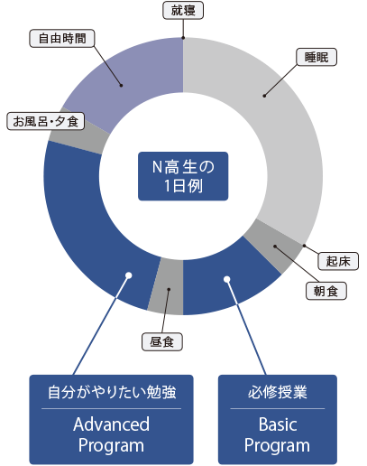

N高について
N高等学校 ｜ 通信制高校（広域）・単位制 > N高について
IT×グローバル社会を生き抜く
“創造力”を身につけ、
世界で活躍する人材を育成する。
創造力をもった人とは、自分なりの考えをもって
主体的に行動できる人です。
私たちの考える創造力とは、新しいモノを生み出す力だけではなく、自由な発想で考え、主体性をもって問題に取り組む力を指します。インターネットが社会に広がり、私たちの生活は大きく変わりました。インターネットを活用すれば、世界中の情報は誰にでも簡単に手に入ります。情報そのものだけでは価値を生まず、その情報を元に自分なりに考え、主体的に動ける人が価値を生み出せるのです。
創造力を身につけるために、教養、思考力、実践力の三つを学びます。
教育方針
教 養
自分なりの考えをもつための知識思考力
知識を使って考える力実践力
考えを行動に移す力


N高の魅力
ネットの高校だから
やりたい事に多くの時間を使える
N高等学校は、インターネットと通信制高校の制度を活用した新しい高校です。そのため、高校卒業のための学習にかかる拘束時間を最小限にとどめる事ができます。だから自らが学びたい事に多くの時間を充てる事ができます。
Basic Program：高校卒業資格取得のための必修授業Advanced Program：将来に繋がる豊富な選択授業

増えた時間で
将来へ繋がる多くの経験ができる
N高では将来へ繋がるオリジナル授業であるAdvanced Program（アドバンスト プログラム）を数多く用意しております。多くの経験からやりたい事をみつけましょう。

高卒資格取得のためのBasic Program
ネットと通信制高校の制度を活用して、
一般的な全日制高校と比べ短い拘束時間で高校卒業資格を得ることが可能です。


プロフェッショナルによる将来へ繋がるAdvanced Program
Advanced Program（アドバンスト プログラム）とは、
任意で受講する選択式授業です。


学校行事はネットとリアルで


全国の仲間とともに活動する部活動


N高等学校校歌『代数Nの方程式』
N高についてさらに詳細を知りたい方はこちら

学校法人角川ドワンゴ学園は、N高等学校以外にもさまざまな学びの場を提供しています